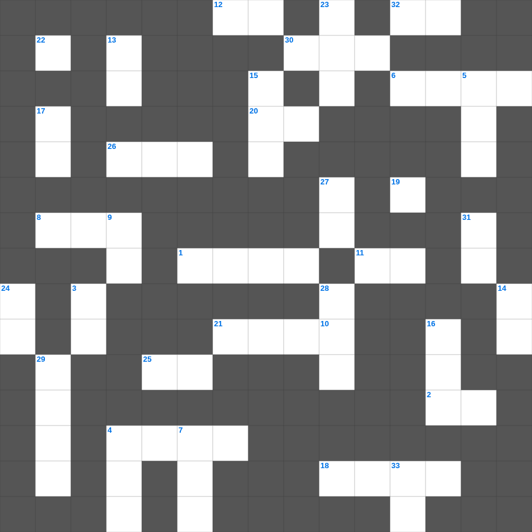

데살로니가전서 마스터 100 (2/2)
📌 서비스 정의
십자가로세로는 교회 주보와 주일학교에서 사용할 수 있는 성경 기반 가로세로 퍼즐 서비스입니다. 성경 인물, 사건, 핵심 구절을 바탕으로 제작되었습니다. 온라인 풀이 및 인쇄 기능을 제공합니다.
📖 데살로니가전서란?
데살로니가전서는 바울이 데살로니가 교회의 믿음을 격려하며, 그리스도의 재림과 성도의 거룩한 삶에 대해 가르치는 서신입니다.
📚 데살로니가전서의 주요 사건·주제
데살로니가 교회의 믿음에 대한 감사 · 거룩한 삶에 대한 권면 · 그리스도의 재림에 대한 가르침 · 죽은 자의 부활에 대한 소망 · 항상 기뻐하라는 권면
오늘은 데살로니가전서의 주요 내용을 담은 데살로니가전서 주일학교 퀴즈를 준비했습니다. 총 35개의 힌트가 있으며, 주일학교 교재나 성경공부 자료로 활용하기 좋습니다. 무료로 즐기는 데살로니가전서 가로세로 퍼즐을 지금 바로 풀어보세요!

📝 가로 힌트
1. 엘리야가 갈멜산에서 불로 응답받은 대결
2. 홍해를 건넌 후 미리암이 잡고 춤추며 노래한 악기
4. 모세의 뒤를 이어 이스라엘의 지도자가 된 사람
5. 하나님의 말씀을 손목에 매어 이것을 삼으라
6. 남은 채소를 다 먹어버린 여덟 번째 재앙
8. 예레미야의 아버지 이름
11. 주께서 강림하실 때까지 우리 살아 남아 있는 자도 자는 자보다 결코 이것하지 못하리라
12. 첫 열매를 광주리에 담아 하나님께 드리는 의식
18. 성벽 재건의 총 책임자이자 총독
20. 요한일서 2장 15절: 무엇을 사랑하지 말라고 했나
21. 너희 중에 일어나는 거짓 선지자나 이 자를 조심하라
25. 안식일에 이것을 줍다가 돌에 맞아 죽은 사람
26. 미리암이 죽어 장사된 곳
30. 정탐꾼들이 포도를 베어온 골짜기 이름
32. 하나님이 처음부터 너희를 택하사 성령의 이것하게 하심과 진리를 믿음으로 구원을 받게 하심이니
📝 세로 힌트
3. 기드온이 하나님께 구한 징표 '이것에만 이슬이 내림'
4. 가나안 땅의 경계를 정해주신 분
5. 여호수아가 태양아 멈추라고 명한 장소
7. 초막절의 다른 이름
9. 노아의 막내 아들
10. 보라 아버지께서 어떠한 사랑을 우리에게 베푸사 하나님의 이것이라 일컬음을 받게 하셨는가
13. 시체를 만진 자는 며칠 동안 부정합니까
14. 북이스라엘의 가장 악한 왕, 이세벨의 남편
15. 아합 왕의 아내, 바알 숭배자
16. 둘째 휘장 뒤에 있는 방을 무엇이라 일컫는가
17. 유다인을 전멸시키려 한 아각 사람
19. 이 일에 분수를 넘어서 형제를 이것하지 말라
22. 의인에게 고통을 주는 것과 귀인을 정직하다고 때리는 것은 이것하지 못하니라
23. 왕의 명령을 거역하여 폐위된 왕후
24. 부정한 짐승의 이것을 만지면 저녁까지 부정함
27. 사랑하지 아니하는 자는 하나님을 알지 못하나니 이는 하나님은 이것이심이라
28. 내 신부야 너는 레바논에서부터 나와 함께 하고 레바논에서부터 나와 함께 이것
29. 레위기 마지막 장은 몇 장인가
31. 우리 조상들은 범죄하고 없어졌으며 우리는 그들의 이것을 맡았나이다
33. 주는 이것하사 너희를 굳건하게 하시고 악한 자에게서 지키시리라
🧑🏫 교회 교육 자료 활용
이 퍼즐은 주일학교 교재 추천 자료로 활용할 수 있고, 주일학교 주보에 넣기 좋은 분량으로 구성되어 있습니다. 수업용 주일학교 교안에 활동지로 붙이거나, 예배 후 복습용 주일학교 공과교재로 바로 사용할 수 있습니다.
🏷️ 키워드
데살로니가전서 주일학교 퀴즈, 데살로니가전서, 십자가로세로, 성경퀴즈, 말씀퀴즈, 가로세로퍼즐, 주일학교 교재 추천, 주일학교 주보, 주일학교 교안, 주일학교 공과교재